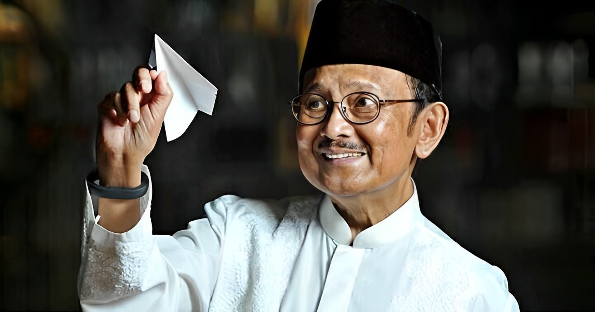
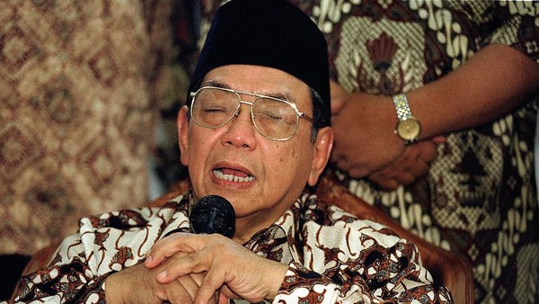
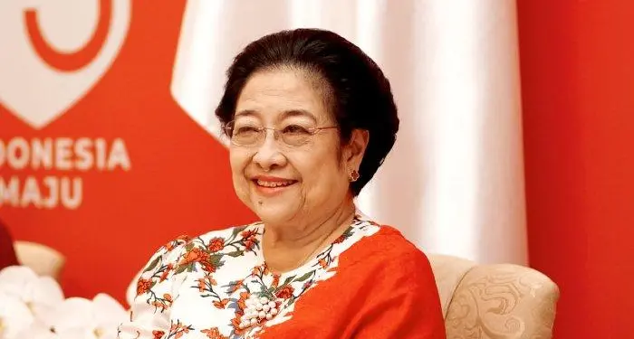
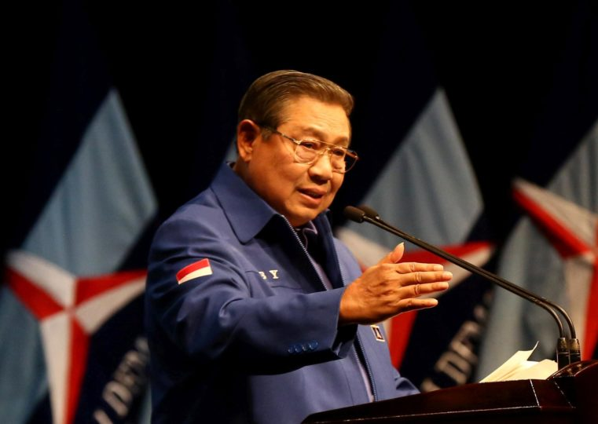
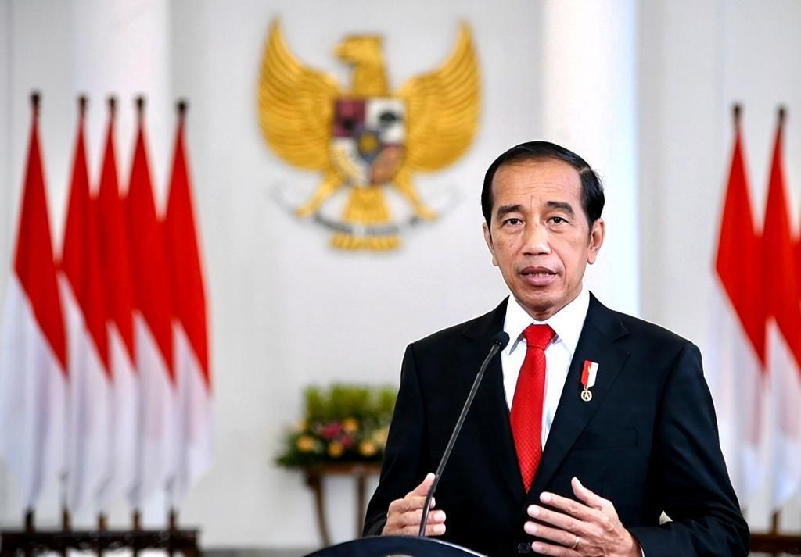

Era reformasi atau era pasca-Soeharto di Indonesia dimulai pada tahun 1998, tepatnya saat Kejatuhan Soeharto Presiden Soeharto mengundurkan diri pada 21 Mei 1998 dan digantikan oleh wakil presiden saat itu, B.J. Habibie. Periode ini didirikan oleh lingkungan sosial politik yang lebih terbuka.
Selama era reformasi, kebebasan berbicara meningkat, berbeda dengan penyensoran yang ketat selama Orde Baru. Akibatnya, debat politik dan ekspresi seni menjadi lebih terbuka di media massa. Selama periode ini, Indonesia telah dipengaruhi oleh sejumlah peristiwa, termasuk serangkaian peristiwa terorisme (seperti bom Bali pada tahun 2002) dan gempa bumi dan tsunami Samudra Hindia pada tahun 2004.
Kepresidenan B.J. Habibie (1998–1999)

https://www.suaramuhammadiyah.id/storage/po
sts/image/Dari_BJ_Habibie_Hingga_FX_Silab
an.jpeg
Wakil Presiden B.J. Habibie dilantik sebagai presiden setelah pengunduran diri Soeharto dan melakukan berbagai reformasi politik. Pemerintah Habibie mengesahkan Undang-Undang Partai Politik pada Februari 1999, yang menghapus batasan jumlah partai politik. Sebelum Soeharto, hanya tiga partai politik yang diizinkan. Tidak ada kewajiban bagi parpol untuk menganut ideologi Pancasila. Ini menyebabkan munculnya partai politik, dan 48 di antaranya akan berpartisipasi dalam pemilihan legislatif 1999.
Pemerintahan Habibie mengesahkan Undang-Undang Otonomi Daerah pada Mei 1999, yang merupakan langkah pertama menuju desentralisasi pemerintahan Indonesia. Ini memungkinkan provinsi-provinsi untuk memiliki peran yang lebih besar dalam pengaturan mereka sendiri. Selama pemerintahan Habibie, media lebih bebas, meskipun Kementerian Penerangan tetap ada. Atas perintah Habibie, tahanan politik seperti Sri Bintang Pamungkas, Muchtar Pakpahan, dan Xanana Gusmão juga dibebaskan.
Pada era Habibie, juga diadakan pemilihan umum legislatif 1999. Ini adalah pemilu legislatif bebas pertama sejak pemilu legislatif 1955. Pemilihan ini diawasi oleh KPU yang independen, bukannya komisi pemilihan yang terdiri dari menteri-menteri pemerintah seperti pada masa Orde Baru.
Habibie juga meminta referendum untuk menentukan masa depan Timor Timur. Banyak orang terkejut dengan tindakan ini, dan beberapa orang marah. Penduduk Timor Timur memilih untuk mendapatkan kemerdekaan pada tanggal 30 Agustus. Setelah itu, popularitas dan aliansi politik Habibie dirusak oleh provinsi ini.
Kepresidenan Abdurrahman Wahid (1999–2001)

https://akcdn.detik.net.id/community/media/visu
al/2019/11/02/56d73136-4877-42f0-954a-2e073c16713e_169.jpeg?w=700&q=90
Gus Dur, Abdurrahman Wahid, menjabat sebagai Presiden Indonesia pada tahun 1999.
Kabinet pertama, yang disebut Kabinet Persatuan Nasional, adalah kabinet koalisi dari berbagai partai politik: Partai Demokrasi Indonesia Perjuangan (PDI-P), Partai Kebangkitan Bangsa (PKB), Partai Golkar, Partai Persatuan Pembangunan (PPP), Partai Amanat Nasional (PAN), dan Partai Keadilan. Kabinet juga memiliki perwakilan militer dan nonpartisan. Salah satu reformasi administrasi negara yang dilakukan oleh Gus Dur adalah pembubaran Kementerian Penerangan, yang merupakan bagian penting dari pemerintahan Orde Baru untuk mengontrol media, dan pembubaran Kementerian Kesejahteraan, yang telah dianggap korup selama periode Orde Baru.
Pemerintahan Gus Dur memulai perundingan dengan Gerakan Aceh Merdeka (GAM) pada Maret 1999. Pada bulan Mei, mereka menandatangani nota kesepahaman yang berlaku hingga awal 2001. Namun, kedua belah pihak kemudian melanggar perjanjian tersebut.
Pada tanggal 30 Desember 1999, Gus Dur melakukan kunjungan ke Jayapura, ibu kota Provinsi Papua, yang saat itu dikenal sebagai "Irian Jaya". Para pemimpin Papua Barat diyakinkan oleh Gus Dur bahwa dia adalah penggerak perubahan dan bahkan mendorong penggunaan nama Papua.
Pada Maret 2000, Gus Dur mengusulkan untuk mencabut Ketetapan Majelis Permusyawaratan Rakyat Sementara (MPRS) tahun 1966 yang melarang Marxisme-Leninisme. Gus Dur mengumumkan darurat militer di Maluku pada bulan September. Penduduk Papua Barat mengibarkan bendera Bintang Kejora pada bulan yang sama. Pengibaran tersebut diizinkan oleh Gus Dur dengan syarat bendera Bintang Kejora diletakkan lebih rendah dari bendera Indonesia. Megawati dan Akbar Tanjung mengecam keras tanggapan ini. Serangkaian pengeboman terhadap gereja-gereja di Jakarta dan delapan kota di seluruh Indonesia terjadi pada 24 Desember 2000.
|
Pada bulan Juli, Gus Dur meminta Menteri Koordinator Politik dan Keamanan Susilo Bambang Yudhoyono (SBY) untuk mengumumkan keadaan darurat. SBY menolak, dan Gus Dur memecatnya. Pada 20 Juli, Amien Rais menyatakan bahwa Sidang Istimewa MPR akan ditunda hingga 23 Juli. Untuk unjuk kekuatan, TNI, yang memiliki hubungan buruk dengan Gus Dur selama jabatannya sebagai presiden, menempatkan 40.000 pasukan di Jakarta dan mengirimkan tank ke Istana Presiden. Gus Dur, yang tidak memiliki otoritas untuk melakukannya, kemudian mengumumkan pembubaran MPR pada tanggal 23 Juli untuk mencegah Sidang Istimewa MPR berlangsung. Bertentangan dengan keputusan Gus Dur, MPR melanjutkan Sidang Istimewa dan kemudian memilih dengan suara bulat untuk memakzulkan Gus Dur dan mengangkat Megawati sebagai presiden. Gus Dur terus bersikeras bahwa ia adalah presiden dan tinggal selama beberapa hari di Istana Kepresidenan tetapi kemudian meninggalkan istana pada 25 Juli untuk segera terbang ke Amerika Serikat untuk merawat kesehatannya.
Kepresidenan Megawati (2001–2004)

https://i0.wp.com/fahum.umsu.ac.id/wp-content/uploads/2023/11/biografi-lengkap-ibu-megawati-sukarnoputri-presiden-kelima-indonesia.jpg?resize=700%2C375&ssl=1
Proses reformasi demokrasi yang dimulai pada periode Habibie dan Gus Dur terus berlanjut pada masa pemerintahan Megawati Soekarnoputri, putri pendiri Indonesia sekaligus presiden pertama. Proses ini berjalan lambat dan tidak menentu. Pada 10 Agustus 2001, Megawati mengumumkan susunan Kabinet Gotong Royong untuk membantunya mengatur negara. Selama jabatannya sebagai menteri, Megawati tidak pernah melakukan perombakan kabinet dan hanya mengangkat beberapa pelaksana tugas sebagai akibat dari pengunduran diri sejumlah menteri yang terlibat dalam pemilihan presiden tahun 2004.
Pada awalnya, banyak orang menyambut kedatangan ikon yang menentang rezim Soeharto ke kursi kepresidenan, tetapi segera terlihat bahwa kepresidenannya ditandai dengan ketidaktegasan, kurangnya garis ideologis yang jelas, dan "dikenal pasif dalam urusan kebijakan penting." Namun, Megawati menstabilkan proses demokratisasi secara keseluruhan dan hubungan antara legislatif, eksekutif, dan militer, yang merupakan keuntungan dari lambatnya kemajuan reformasi dan menghindari konflik.
Angka pengangguran dan kemiskinan masih tinggi meskipun ekonomi telah stabil dan cukup pulih dari krisis 1997 pada tahun 2004. Konstitusi Indonesia kemudian diubah untuk memungkinkan pemilihan presiden langsung oleh rakyat. Megawati kemudian mencalonkan diri untuk jabatan kedua. Ia secara konsisten kalah dalam jajak pendapat. Ini sebagian disebabkan oleh fakta bahwa pemilih Muslim lebih cenderung memilih kandidat laki-laki dan kinerja Megawati selama menjabat sebagai presiden dianggap normal. Meskipun dia tampil lebih baik dari yang diharapkan pada putaran pertama pemilu presiden 2004, ia dikalahkan oleh Susilo Bambang Yudhoyono, mantan Menteri Koordinator Bidang Politik, Hukum, dan Keamanan di pemerintahan Megawati, di putaran kedua.
Kepresidenan Susilo Bambang Yudhoyono (2004–2014)

https://d22gwcrfo2de51.cloudfront.net/wp-content/uploads/2023/03/20180917PRI16HR-761x540.jpg
Pemilihan presiden Indonesia 2004 adalah yang pertama di mana pemilih memilih secara langsung pasangan presiden dan wakil presiden. Setelah melewati dua putaran pemilihan, pasangan Susilo Bambang Yudhoyono (SBY) dan Jusuf Kalla menang. Susunan Kabinet Indonesia Bersatu diumumkan oleh SBY pada 21 Oktober 2004.
Gempa bumi dan tsunami di Samudra Hindia pada tahun 2004 melanda Aceh dan negara-negara lain di sepanjang garis pantai Samudra Hindia, dua bulan setelah SBY menjabat. Tiga bulan kemudian, gempa bumi lain memicu tsunami di Pulau Nias. Pada tahun 2006, Gunung Merapi meletus, yang mengakibatkan gempa bumi di Yogyakarta. Flu burung dan semburan lumpur Sidoarjo juga melanda Indonesia. Banjir besar melanda Jakarta pada tahun 2007. Dengan mempertimbangkan kemungkinan banjir Istana Kepresidenan, SBY memberikan izin kepada Gubernur DKI Jakarta Sutiyoso untuk membuka pintu air Manggarai.
SBY juga memberikan dana tambahan untuk mengurangi kemiskinan. Pada tahun 2004, 18 triliun rupiah dari APBN dialokasikan untuk mengentaskan kemiskinan. Jumlah ini meningkat menjadi 23 triliun pada tahun 2005 dan 51 triliun pada tahun 2006. Keputusan SBY untuk memotong subsidi bahan bakar pada Maret dan Oktober 2005 menyebabkan kenaikan harga bahan bakar. SBY memberikan kompensasi kepada masyarakat miskin melalui Bantuan Langsung Tunai (BLT), tetapi pemotongan subsidi kemudian menurunkan popularitas SBY. Keputusan SBY untuk sekali lagi memotong subsidi BBM pada Mei 2008 didorong oleh kenaikan harga minyak, yang menyebabkan protes masyarakat pada Mei dan Juni 2008.
|
SBY dan Boediono, mantan Gubernur Bank Indonesia, bersaing untuk masa jabatan kedua dalam pemilu presiden 2009. Mereka mengalahkan Megawati Soekarnoputri—Prabowo Subianto dan Jusuf Kalla—Wiranto, wakil presiden saat itu. Pada 21 Oktober 2009, mereka mengumumkan susunan Kabinet Indonesia Bersatu II.
Kepresidenan Joko Widodo (2014–2024)

https://temon.kulonprogokab.go.id/detil/358/pre
siden-jokowi-bolehkan-masyarakat-mudik-lebaran-ini-syaratnya
Joko Widodo (juga dikenal sebagai Jokowi) dan Jusuf Kalla (yang kembali dicalonkan sebagai wakil presiden) mengalahkan Prabowo Subianto dan Hatta Rajasa pada pemilu presiden 2014. Jokowi adalah presiden pertama yang tidak memiliki latar belakang militer atau politik yang kuat.
Presiden Joko Widodo sudah memberikan banyak perubahan yang terjadi di Indonesia, semasa 10 tahun dirinya menjabat sebagai kepala negara.
Diantaranya: pembangunan infrastruktur di Indonesia. Anggaran yang digelontorkan untuk pembangunan infrastruktur selama delapan tahun mencapai Rp 3.309 triliun. Pembangunan infrastruktur kini merata di seluruh penjuru tanah air, bukan hanya di Pulau Jawa saja.
Keberhasilan berikutnya, yakni meratanya perekonomian di Indonesia. Saat ini, perekonomian tidak hanya menyebar di perkotaan, tapi juga perdesaan.
Jokowi menyebut, sebanyak 74.800 desa di Indonesia saat ini, pemerintah telah menggelontorkan Rp 470 triliun dana desa untuk mendorong perekonomian di pedesaan. Hal ini dinilai sebagai komitmen besar negara.
Selanjutnya, yaitu keberhasilan Indonesia untuk melakukan hilirisasi, yang membawa dampak terhadap perekonomian nasional.
Jokowi bilang, bahwa pada 2020 ekspor nikel bahan mentah telah dilakukan. Meskipun Indonesia telah kalah gugatan di WTO dari Uni Eropa, mantan Gubernur DKI Jakarta ini bersikeras bahwa hilirisasi harus dilakukan.
Hilirisasi nikel yang dilakukan Indonesia sejak 2020 telah terlihat hasilnya saat ini. Laju ekspor Indonesia meningkat, dari sebelumnya hanya Rp 17 triliun, menjadi Rp 450 triliun pasca Indonesia hanya mengekspor barang setengah jadi dan barang jadi dari komoditas nikel.
Oleh karena itu, Jokowi meminta kepada penerus kepala negara untuk periode berikutnya, untuk tetap melakukan hilirisasi komoditas sumber daya alam.
Isu-isu Era Reformasi
Namun, dengan semua keberhasilan yang diperoleh oleh Presiden Joko Widodo, era reformasi sekarang pun masih menghadapi tantangan.
Masalah korupsi, tetap menjadi salah satu tantangan terbesar dalam politik Indonesia. Korupsi mengoyak kepercayaan masyarakat terhadap pemerintah dan menghalangi pembangunan berkelanjutan. Saat ini korupsi merupakan salah satu masalah besar yang dihadapi oleh bangsa Indonesia, karena telah merusak tata kelola pemerintahan yang baik. Oleh sebab itu, maka pemberantasan korupsi harus diutamakan tanpa pandang bulu. Dampak utama korupsi yang terus merajalela di Indonesia, telah menggerus kepercayaan masyarakat terhadap lembaga-lembaga pemerintah dan sistem politik. Ini dapat mengurangi partisipasi politik dan dukungan terhadap demokrasi. Dana publik yang seharusnya digunakan untuk pembangunan dan pelayanan masyarakat, seringkali disalahgunakan oleh individu atau kelompok yang korup.
Tentu hal ini telah mengakibatkan ketidaksetaraan sosial-ekonomi dan memperburuk kemiskinan. Alhasil, dana yang terbuang akibat korupsi dapat menghambat pembangunan infrastruktur, pendidikan, kesehatan, dan sektor-sektor lain yang sangat penting untuk pertumbuhan ekonomi dan kesejahteraan masyarakat. Selain itu, korupsi juga menyebabkan ketidakadilan dalam sistem hukum, di mana orang-orang kaya dan merasa berkuasa dapat menghindari pertanggungjawaban, sementara orang-orang miskin terpinggirkan dan terpuruk.
Tantangan selanjutnya, ketidaksetaraan sosial-ekonomi. Meskipun secara nyata telah terjadi kemajuan ekonomi, ternyata ketidaksetaraan sosial-ekonomi ternyata masih bercokol di Indonesia. Ketimpangan pendapatan antara kelompok-kelompok sosial dan wilayah, masih menjadi masalah yang perlu diatasi.
Ada beberapa faktor yang berpengaruh terhadap ketidaksetaraan ini.
Ketimpangan regional.
Ada ketidaksetaraan besar antara wilayah-wilayah di Indonesia. Pulau-pulau besar seperti Jawa dan Sumatera, cenderung lebih maju perekonomiannya dibandingkan dengan pulau-pulau yang lebih kecil dan terpencil.
Disparitas pendidikan.
Akses dan kualitas pendidikan juga memainkan peran penting dalam ketidaksetaraan. Orang-orang dengan akses pendidikan yang lebih baik, memiliki peluang ekonomi lebih besar, sementara yang kurang beruntung terkadang terperangkap dalam siklus kemiskinan.
Akses ke lapangan kerja.
Masalah ketidaksetaraan juga terlihat dalam akses ke lapangan kerja dan peluang pekerjaan yang layak. Orang-orang dengan keterampilan dan pendidikan yang lebih tinggi, cenderung memiliki peluang kerja lebih baik.
Pajak dan kebijakan ekonomi.
Sistem pajak dan kebijakan ekonomi dapat memengaruhi ketidaksetaraan. Menerapkan kebijakan pajak yang adil dan mengarahkan investasi ke daerah-daerah yang kurang berkembang, adalah salah satu langkah yang dapat diambil untuk mengatasi ketidaksetaraan.
|